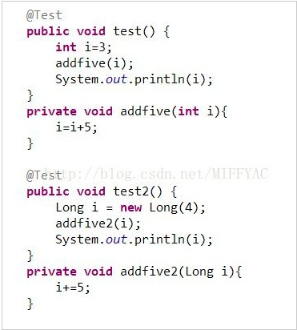
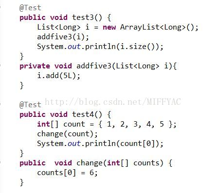
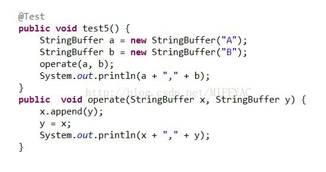

风中飘来了桔子的香味
原始类型（int，long等）和包装类（Integer,Long等）进行参数传递时是值传递，所有函数体内针对参数的操作，都是对于拷贝的操作，不会改变本体。
类和容器（list,set等）作为参数时传的是引用的一个副本（注意：不是引用本身。区别于C++）。
1）以下为原始类型和包装类作为参数时的例子。执行单元测试的结果分别为3和4。本体没有被改变。
2）以下是list和array作为参数时的例子。函数体内做的变化都改变了list和array本身。结果是1和6.
3) StringBuffer类作为参数时的改变情况。

结果为：
AB,AB
AB,B
分析：类作为参数时，传的是引用的副本。
x=a, y=b 传入。
x.append(y) //x指向的对象内容被改变，在尾部添加了y指向的对象内容
y=x //将引用y指向引用x指向的内容，即指向a。注意，b的内容没有被改变
输出x,y的内容，即输出a指向的内容。